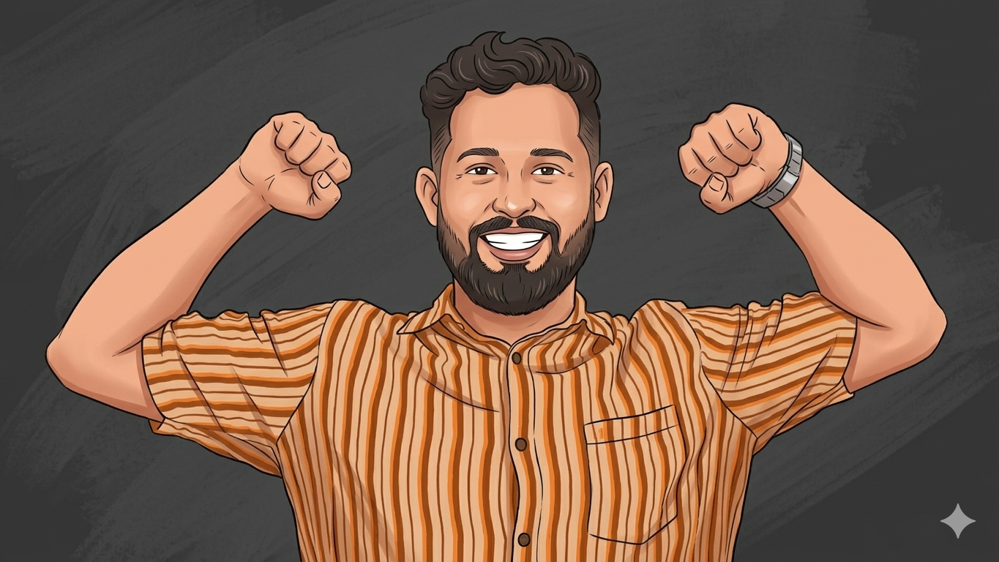

Hi, I'm
Roshan Ali
AI Officer at Kirpa Properties · AI, LLMs & Automation · Data, Strategy & Property Intelligence

Technology, Strategy & Better Decisions
Connecting AI with the Decisions That Matter
I’m AI Officer at Kirpa Properties, based in the UAE. My focus is the practical use of AI, LLMs, automation and data in business — how technology can help people understand a problem, improve a workflow and make a better decision.
My background spans enterprise technology, industrial engineering, and IT and operations in Dubai’s medical sector. It shapes the questions I bring to AI: what problem are we solving, what information can we trust, and what would make the result useful to the person doing the work?
On LinkedIn, I explore AI adoption, technology strategy and property intelligence, with a particular interest in Dubai real estate and investment research. I’m interested in how sources, assumptions and uncertainty shape a conclusion — and where an LLM can help or mislead. My aim is to make the reasoning clear and distinguish evidence from opinion.
Tools & Expertise
A full-stack AI engineering toolkit — from LLM agents and prompt design to production automation and integrations.
AI & LLM Engineering
Conversational AI & Agents
Programming & Scripting
Automation & Integration
Experience Timeline
A background in technology and operations, now focused on AI and business applications in real estate.
My current focus is the practical application of AI, automation and data in business. In a real estate context, I’m interested in how these capabilities can support everyday operations, clearer information and better-informed decisions.
The questions guiding my work and thinking include where LLMs can be useful, which workflows are worth automating, and what evidence is needed to judge an outcome. My broader writing explores Dubai property research and investment intelligence: understanding sources, testing assumptions and making uncertainty visible before drawing a conclusion.
Worked across technology and business operations in Dubai’s medical sector. This experience informs my interest in workflow improvement, practical technology adoption and the information people need to do their jobs effectively.
Architected and shipped an automation framework in Python (Playwright + Selenium, Pytest, Page Object Model) spanning UI, API, and database layers — cut execution time by 60% and lifted automated coverage from 30% to 78%, running continuously in production CI/CD.
Built LLM-assisted tooling and validation for non-deterministic AI outputs — rule-based assertions, invariant checks, embedding / BERTScore similarity, and probabilistic tolerances — adopted as the team's standard methodology for AI features. Wired automated pipelines into Jenkins CI/CD with nightly runs, Slack / email reporting, and Allure dashboards — actionable feedback within 2 hours of commit. Governed 2,500+ issues and embedded into 92 design reviews, preventing ~40% of defects before they were written.
Automated data-collection and reporting workflows — eliminated manual inconsistencies by 30% and lifted operational data integrity by 25% across tracking and reconciliation systems. Established 10+ operational metrics and acceptance criteria for process changes, enforcing outcome validation before every rollout.
Education & Certifications
Continuous learning across engineering, computer science, business, and quality assurance.
Domains Worked
Enterprise-scale delivery across asset-intensive, service-driven, and regulated industries worldwide.
Worked across enterprise solutions serving major industrial and service-heavy sectors including Aerospace & Defense, Energy, Utilities & Resources, Construction & Engineering, Manufacturing, Service Industries, and Telecommunications. The work touched business areas such as project and program delivery, asset lifecycle control, maintenance and MRO, field service, workforce planning, scheduling and dispatch, supply chain coordination, compliance-heavy operations, and large-scale operational efficiency.
Highly regulated, mission-critical environments where the platform supports engineering, manufacturing, maintenance, support, availability, sustainment, and end-of-life control across aircraft, defense assets, and related operations. Extends into A&D manufacturing, MRO providers, airlines/air operators, defense contractors, and defense forces.
Operations requiring strong control over assets, maintenance, service response, sustainability, uptime, and field execution. Spans utility operations, water and wastewater, transmission and distribution, power generation, and oil and gas. Focus on improving reliability, reducing downtime, optimizing maintenance, and supporting digital transformation in asset-intensive environments.
Project-driven businesses where success depends on strong planning, execution, procurement, cost control, subcontract management, resource efficiency, and end-to-end project lifecycle visibility. Branches into specialist engineering and shipbuilding/maritime operations.
Industrial manufacturing, high-tech manufacturing, automotive, chemicals, and life sciences. Work aligned with production control, supply chain integration, quality, smart manufacturing, service operations, and profitability improvement in complex manufacturing environments.
Organizations focused on service delivery, customer experience, enterprise service management, field operations, and operational responsiveness. Includes consumer service organizations, internal service operations, and public-sector-style service environments.
Workforce efficiency, infrastructure modernization, customer experience, field service productivity, ERP-led operational control, and support for evolving telecom business models such as 5G expansion and adjacent services. Relevant to cable and telecom-adjacent manufacturing operations.
Featured Projects & Systems Built
AI agents, automation frameworks, and LLM-powered tools shipped to production.
More Work Available on Request
The above 12 are a curated selection. Roshan has built and shipped AI systems, automation pipelines, and LLM integrations across healthcare, enterprise ERP, and industrial engineering. Get in touch to discuss the full scope.
Engineering Case Studies
How I approached complex AI and automation problems — from business problem to production solution.
Situation
Joined a DHA-licensed healthcare group with no existing AI capability, no technical team, and a founder with a broad ambition to "use AI for sales and operations" — no spec, no budget baseline, no prior tooling.
Approach
Mapped the highest-friction manual workflows first: inbound lead handling, follow-up drafting, call notes, and proposals. Prioritised by impact-to-effort ratio. Started with the WhatsApp AI assistant and CRM copilot — the two workflows that consumed the most staff time — before expanding to call summarisation and proposals.
Execution
Built each system end-to-end: prompt architecture, API integration, CRM write-back, error handling, and staff playbooks. Ran user acceptance testing with real staff before each launch. Iterated on prompts based on live usage — not just happy-path demos.
6 AI systems shipped and running in production. Staff operate them independently. Speed-to-lead, proposal turnaround, and call logging all fully automated.
Problem
The AI scheduling engine at IFS produced different outputs every run. Standard test assertions failed constantly — not because the system was wrong, but because exact-value testing doesn't work on non-deterministic AI. The team had no reliable way to know if a change broke something.
Investigation
Studied the domain constraints the AI had to satisfy regardless of its specific output — resource capacity limits, task dependency ordering, cost ceilings, SLA windows. These were invariants: properties that must always hold true even when the output varies.
Solution
Built a validation framework using rule-based assertions, invariant checks, BERTScore / embedding similarity for LLM outputs, and probabilistic tolerances. Outputs are validated against business constraints — not expected values — making the suite stable regardless of non-determinism.
Adopted as the R&D team's standard methodology for all AI features. Near-zero AI-related production escapes across 90+ sprints on a live production platform.
Problem
The IFS platform had 30% automated coverage and slow, fragile test runs. Manual testing was the primary quality gate — unsustainable across 90+ sprints on a fast-moving AI platform. The team had no confidence in releases without days of manual regression.
Approach
Architected a Python framework (Playwright + Selenium, Pytest, Page Object Model) spanning UI, API, and database layers. Designed coverage tiers: fast smoke suite for every commit, full regression nightly, targeted suite for feature areas under active development.
Execution
Wired the framework into Jenkins CI/CD with Allure dashboards and Slack / email alerts. Added the LLM validation layer for AI-specific outputs. Maintained and extended the suite across 3 years of platform growth as sole automation owner.
Coverage: 30% → 78%. Execution time cut 60%. Feedback within 2 hours of every commit. Manual regression eliminated as the primary gate.
Metrics Dashboard
Real numbers from 5+ years of building, shipping, and owning AI systems and automation.
Delivered
Governed
Executed
Escapes
via Spec Reviews
Cut
Reduced (Mentoring)
90+ Sprints · Near-Zero Defects
Sole QA lead across 90+ sprints on a non-deterministic ERP & AI scheduling platform — achieved full traceability from specs to outcomes with near-zero defects escaping to production across the entire engagement.
80+ defect triage and quality gate reviews conducted as sole QA lead — aligning Dev, Product, and stakeholders on every release decision with data-driven go/no-go reporting.
Reviewing 92 tech specs before development flagged edge cases, testability gaps, and integration risks early — preventing an estimated 40% of defects from ever entering the codebase.
Structured triage governance — enforcing reproducibility standards, severity discipline, and clear Dev ownership — cut the average time defects remained open by 35%.
Mentoring and upskilling 3 senior QA engineers raised test design quality and defect-writing rigour, reducing the volume of work sent back for correction by 25%.
Led 80+ defect triage and quality gate sessions — producing stakeholder-ready Jira & Xray dashboards that directly informed go/no-go release decisions for enterprise products.
Beyond the Test Cases
Building quality cultures, leading teams, and earning industry recognition.
QA Mentorship
Mentored and upskilled 3 senior QA engineers at IFS, raising test design quality, defect-writing rigour, and execution discipline — reducing review rework by 25%.
Stakeholder Management
Produced stakeholder-ready release reports (coverage, defect trends, ageing, execution status) that directly informed go/no-go decisions for enterprise product releases at IFS.
Quality Gate Ownership
Led 80+ defect triage and quality gate review sessions as sole QA lead — aligning Dev, Product, and stakeholders on release priorities and systematically unblocking pipelines.
AI-Assisted QA Innovation
Championed AI-assisted QA adoption (test design acceleration, regression optimisation, defect clustering, root-cause support) and partnered with Architecture & R&D to modernise QA ways of working across the organisation.